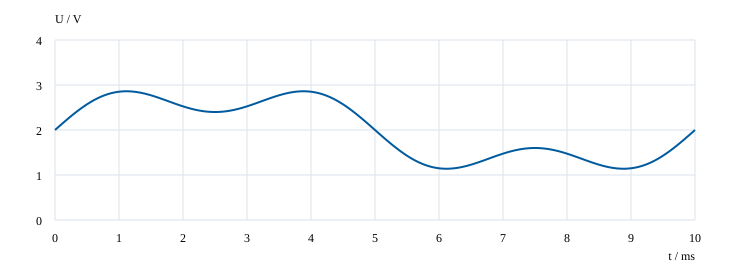
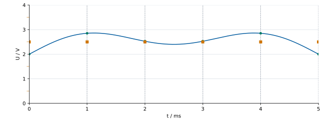
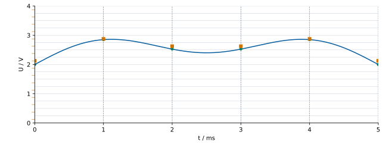
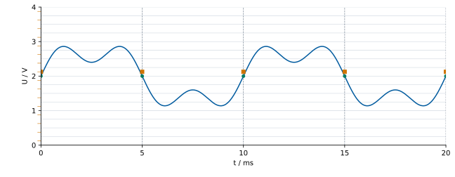

1 · Signalanteile · Ergebnis anzeigen
Höchste Frequenz: 300 Hz
1b: Aussage falsch.

2 · Abtastfrequenz · Ergebnis anzeigen
| Abtastfrequenz | Auswahl |
|---|---|
| 400 Hz | nicht geeignet |
| 600 Hz | nicht geeignet |
| 1.000 Hz | geeignet |
Auswahl: 1.000 Hz · Abtastperiode: 1 ms
3 · Quantisierung · Ergebnis anzeigen
2 Bit: 4 Stufen · 1 V
4 Bit: 16 Stufen · 0,25 V
| t / ms | U / V | 2 Bit / V | 4 Bit / V |
|---|---|---|---|
| 0 | 2 | 2,5 | 2,125 |
| 1 | 2,85 | 2,5 | 2,875 |
| 2 | 2,53 | 2,5 | 2,625 |
| 3 | 2,53 | 2,5 | 2,625 |
| 4 | 2,85 | 2,5 | 2,875 |
| 5 | 2 | 2,5 | 2,125 |
3c: 4 Bit
4 · Messgeräte vergleichen · Ergebnis anzeigen
Blau: Original · Grün: Abtastwerte · Orange: quantisierte Werte
A · 1 ms · 1.000 Hz · 2 Bit

B · 1 ms · 1.000 Hz · 4 Bit

C · 5 ms · 200 Hz · 4 Bit

C: Abtastwerte 2 V · quantisierte Werte 2,125 V
A → B: feinere Spannungsstufen.
B → C: zu geringe Abtastfrequenz; konstante Messwerte.
Hohe Bitzahl allein ausreichend: Nein.
5 · Abschluss · Ergebnis anzeigen
Signalanteile: 150 Hz und 450 Hz
Auswahl: 1.200 Hz / 4 Bit